O cenário vem pronto do Blender. Só o que muda é desenhado ao vivo no navegador: o carro chegando, o cabo conectando, a recarga, a falha da bomba e o preço no totem. A maquete segue a hora do dia.
O posto vazio e o teto de vidro saem do Cycles para cada período do dia. Entre eles, o navegador desenha o carro na mesma câmera, com a luz exportada da própria cena. Caixas invisíveis no lugar de pilares, frades e da bomba escondem o carro onde há algo na frente.
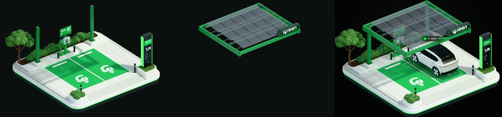
Vegetação, vidro, pisos e luzes têm exatamente a qualidade do render aprovado.
O estado vem dos dados do posto: quem está carregando, a potência, a carga, as falhas e o preço.
O carro ao vivo usa o mesmo ajuste de cor do Blender e o reflexo tirado da cena, no lugar da vaga.
O dono não precisa mexer na maquete. Os cards ao lado mostram o que acontece e o posto acompanha, com os mesmos nomes P1 e P2.
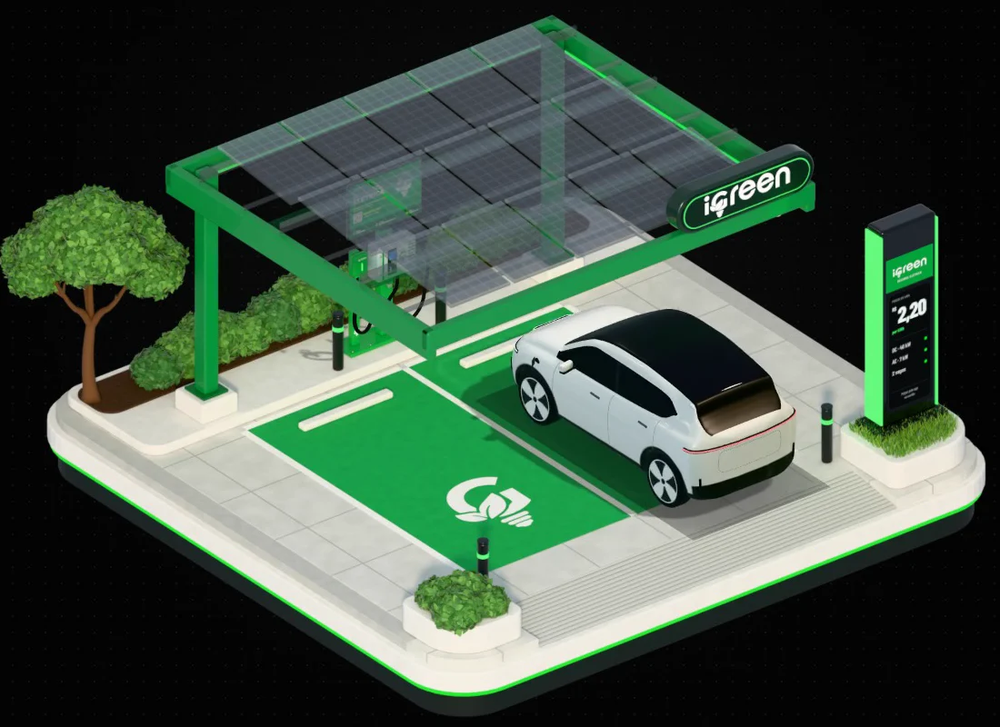
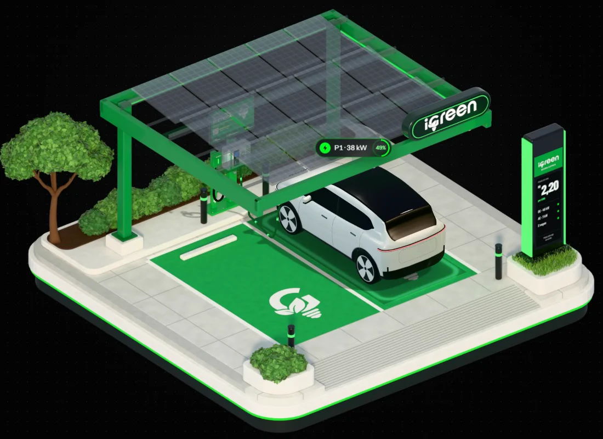
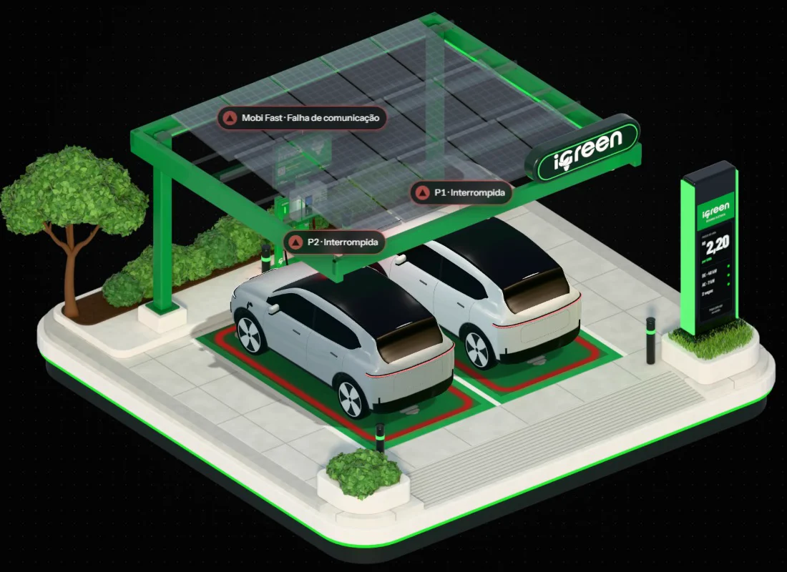
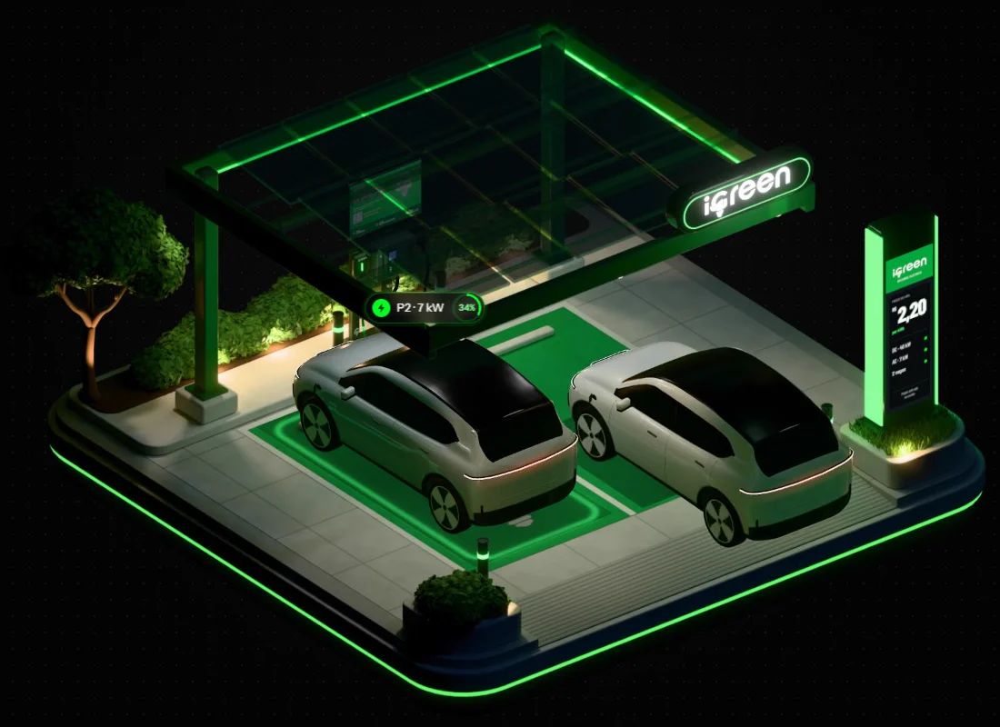
Cada período é um render do Blender. A maquete cruza o atual com o próximo no horário do Brasil, e a luz, a sombra e os faróis do carro acompanham. Em produção, de 6 a 8 períodos.
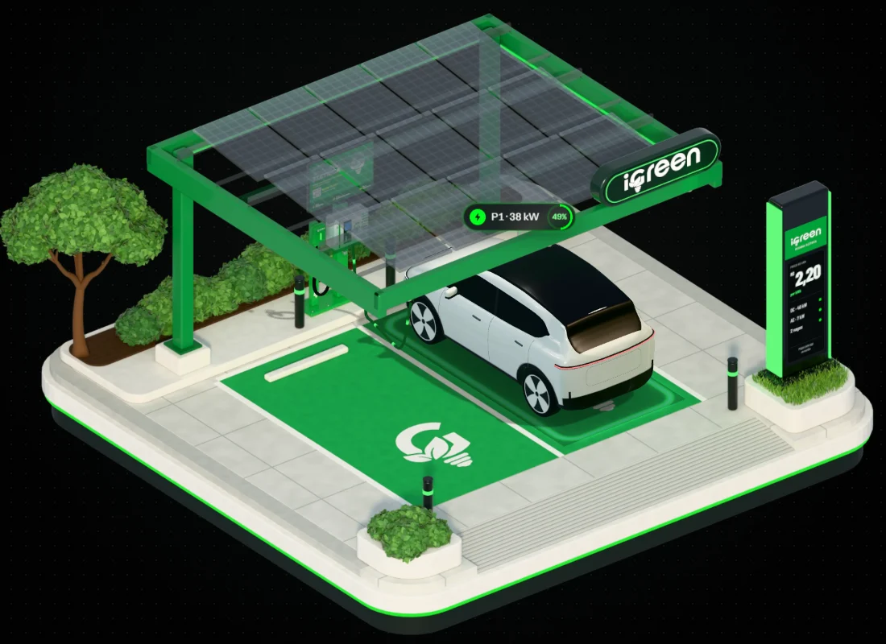
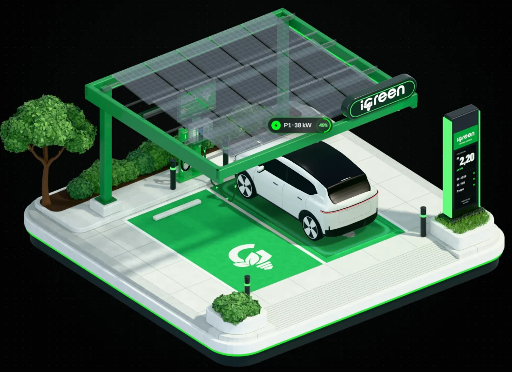
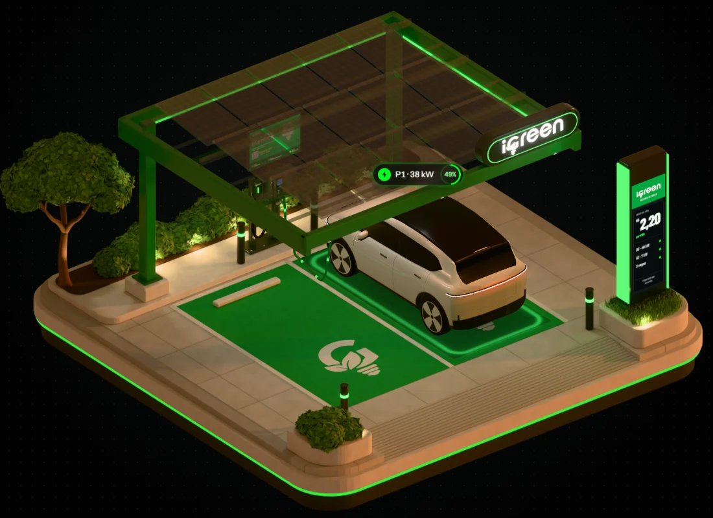
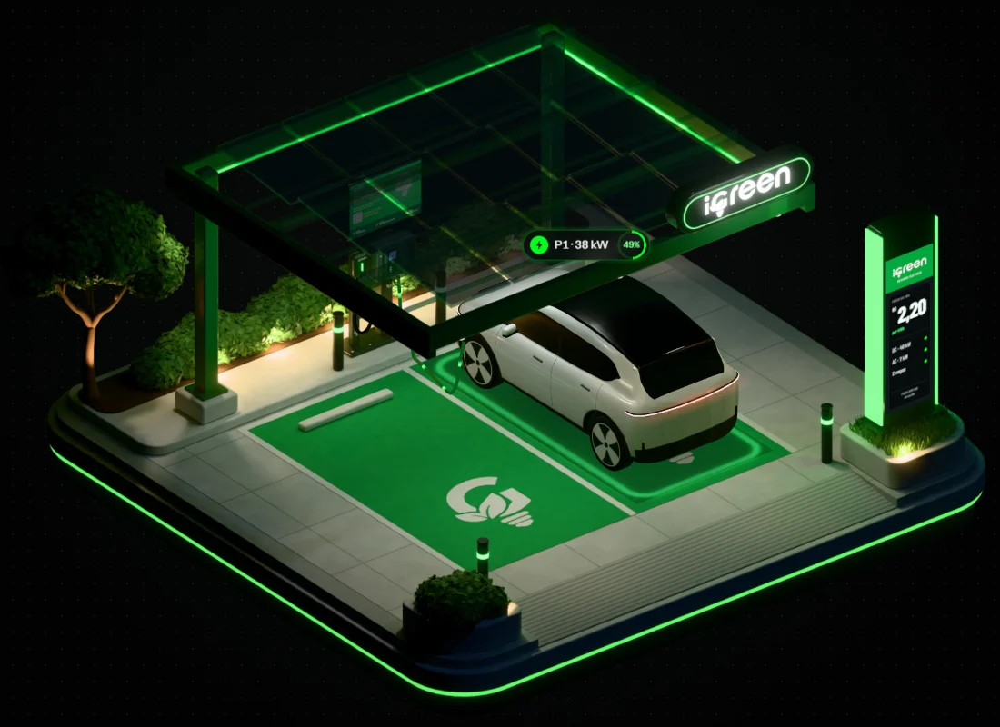
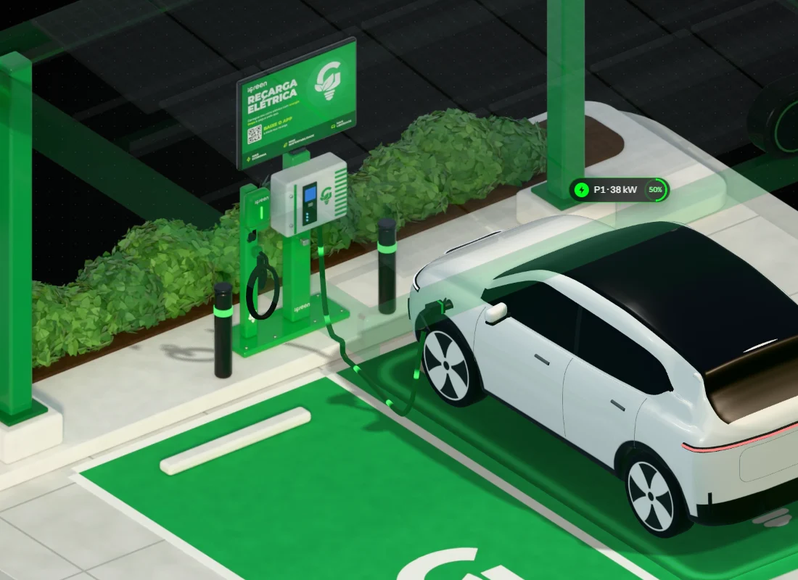
À esquerda, o carro desenhado no navegador. À direita, o mesmo momento renderizado no Blender. As diferenças são o anel e o pulso da recarga, que só existem ao vivo, e o reflexo no chão, que é do Cycles.
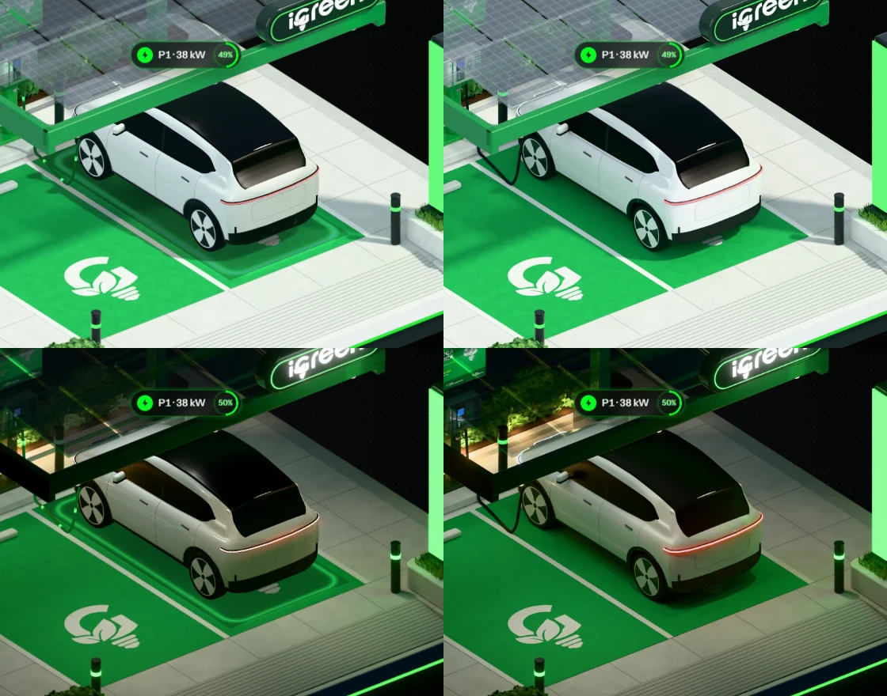
O mesmo script do Blender monta o posto a partir da lista de bombas e gera a pasta que a página lê: camadas, âncoras e peças da bomba. Outro posto é outra pasta, sem mudar o código.
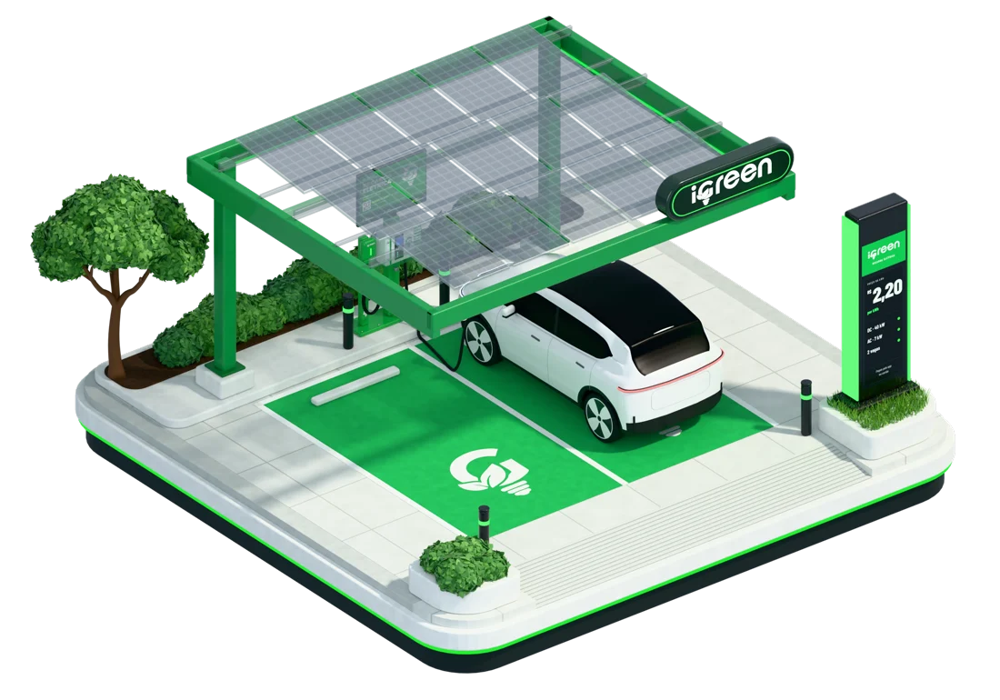
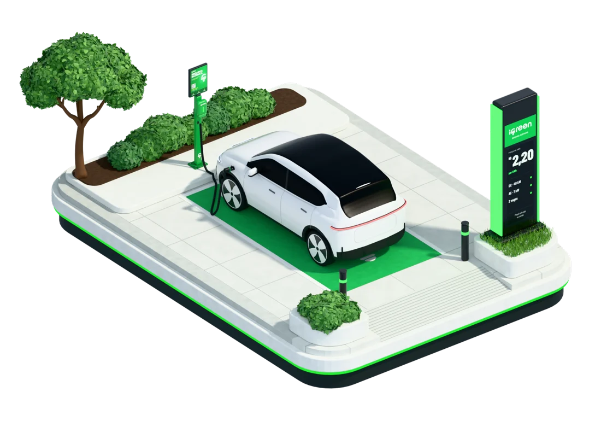
Medido na sua máquina. Ainda falta testar num notebook comum e num celular; para aparelho fraco, a maquete cai para a imagem do período com os selos.